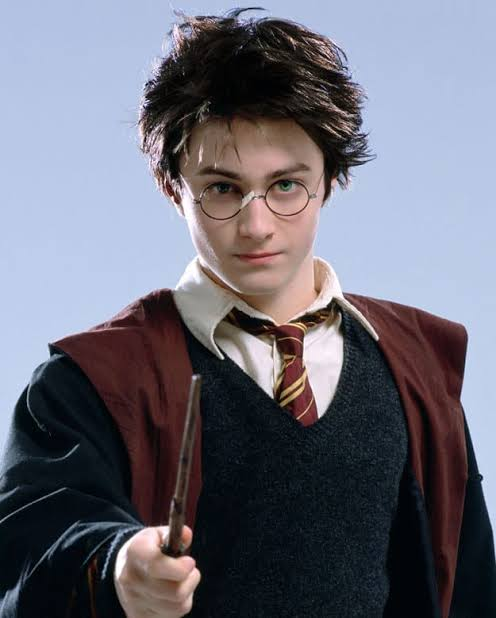

November 25 2015
Harry Potter
"No," she said, continuing to pace. "Not unless you can answer my riddle. Answer on your first guess - I let you pass. Answer wrongly - I attack. Remain silent - I will let you walk away from me unscathed." Harry's stomach slipped several notches. It was Hermione who was good at this sort of thing, not him. He weighed his chances. If the riddle was too hard, he could keep silent, get away from the sphinx unharmed, and try and find an alternative route to the center. "Okay," he said. "Can I hear the riddle?"
"I merely thought," said Snape, in a voice of forced calm, "that if Potter was wandering around after hours again ... it's an unfortunate habit of his ... he should be stopped. For - for his own safety." "Ah, I see," said Moody softly. "Got Potter's best interests at heart, have you?"
"Ladies first," he said, offering it to Fleur Delacour. She put a shaking hand inside the bag and drew out a tiny, perfect model of a dragon - a Welsh Green. It had the number two around its neck And Harry knew, by the fact that Fleur showed no sign of surprise, but rather a determined resignation, that he had been right: Madame Maxime had told her what was coming.